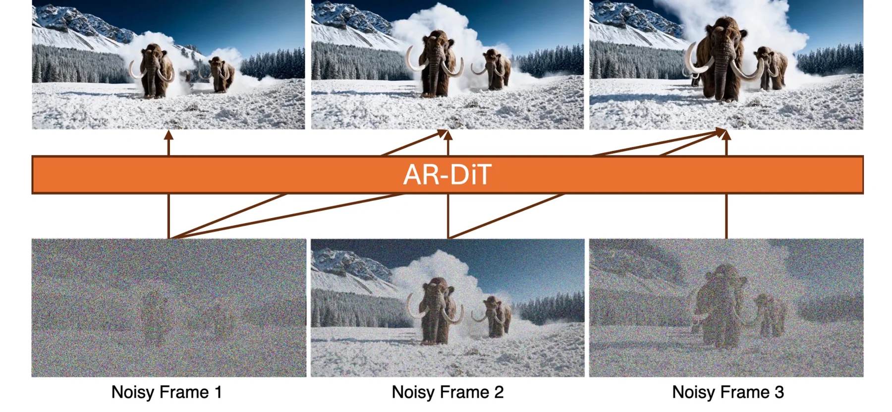
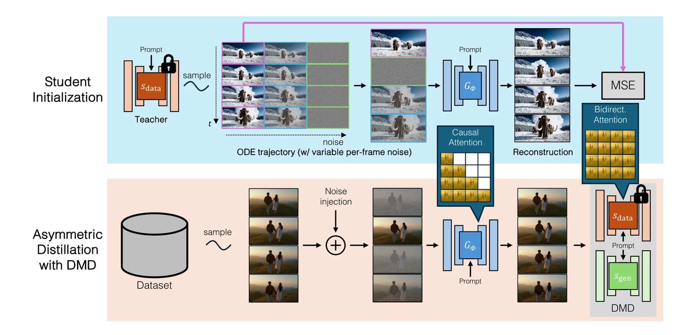
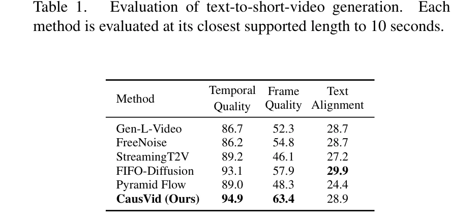
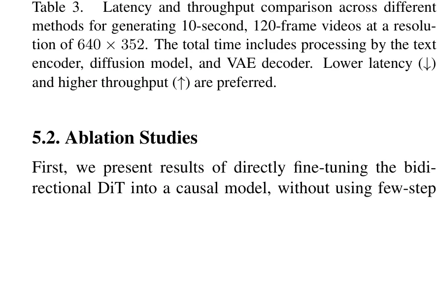
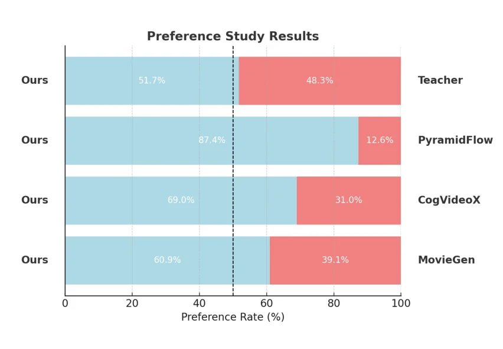
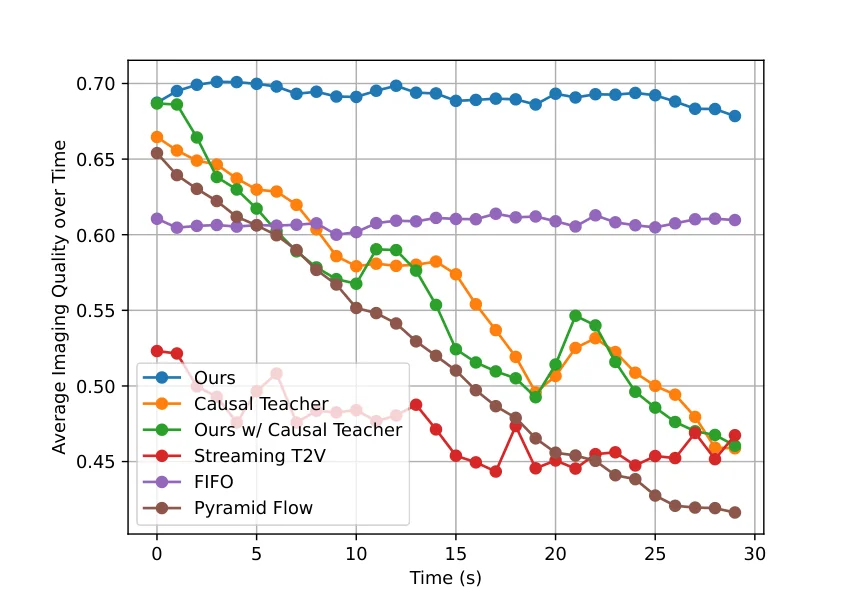

双向扩散的延迟困境
为什么当前视频扩散模型无法实现流式生成？
当前主流的视频扩散模型（如基于 DiT 架构的 CogVideoX、OpenSora 等）在生成每一帧时，都需要对整个视频序列进行双向注意力计算。这意味着，即便是生成第一帧，模型也必须"看到"所有未来帧的信息——这种全局依赖直接导致了严重的延迟问题。
具体而言，生成一段 128 帧的视频需要 219 秒，且计算与内存开销随帧数呈二次增长。这种延迟特性使得视频扩散模型完全无法应用于交互式生成、流式推理等实时场景。
自回归模型（如 LLM 风格的逐帧生成）提供了一条自然的解决路径：每个帧块仅依赖历史帧，可以流式输出。然而，朴素的自回归视频生成面临误差累积问题——早期帧的微小偏差会在后续帧中被不断放大，导致视频质量迅速退化。
CausVid 的核心思想是：将双向扩散模型蒸馏为因果自回归模型，同时利用分布匹配蒸馏（DMD）将去噪步数从 50 步压缩至 4 步。这一"架构转换 + 步数压缩"的双重优化，最终实现了：
图 1：双向 vs 因果注意力范式对比。左：传统双向扩散中所有帧互相 attend，生成任意帧都需处理完整序列；右：CausVid 因果注意力中帧按序生成，当前帧仅可见历史帧，支持流式推理。

图 2（论文 Figure 1）：CausVid 与传统双向扩散模型的延迟对比。传统方法需要等待全部帧生成完毕才能输出，而 CausVid 可以在 1.3 秒内输出首帧并持续以 9.4 FPS 流式生成。
核心洞察——非对称蒸馏策略
为什么用双向教师蒸馏因果学生，而非因果教师蒸馏因果学生？
将双向模型转换为因果模型，最直觉的方法是因果教师蒸馏因果学生：先用因果掩码微调一个因果教师，再用它指导因果学生。然而这条路径存在根本缺陷——因果教师本身就受误差累积困扰，其监督信号质量随帧数增加而下降，最终学生模型也继承了这一问题。
CausVid 提出了非对称蒸馏（Asymmetric Distillation）策略：保留双向模型作为教师，仅将学生改造为因果架构。双向教师"看得见未来"，能提供更高质量的去噪监督信号；因果学生虽然只能看到历史帧，但在强教师的指导下可以学到逼近全局最优的生成能力。
图 3：非对称蒸馏信息流。双向教师（左）可见全部帧提供高质量监督，通过 DMD 损失（中）指导因果学生（右）学习。底部虚线框为被否弃的朴素方案——因果教师蒸馏因果学生。
这一策略体现了一个重要的哲学转变：传统蒸馏假设教师与学生架构相同（如渐进蒸馏、一致性蒸馏），仅减少采样步数；而 CausVid 利用 DMD 的跨架构蒸馏能力，在减少步数的同时完成架构层面的转换（双向 → 因果）。这是 DMD 相比其他蒸馏方法的独特优势——它在分布层面而非轨迹层面进行匹配，因此不要求教师和学生在相同的状态空间中逐步对齐。
因果架构设计——块状因果注意力
在局部双向与全局因果之间取得平衡
CausVid 首先使用 3D VAE 将视频压缩到隐空间：每 16 个像素帧被压缩为 5 个隐帧。随后在隐空间中执行块状因果注意力（Block-wise Causal Attention）。
块状因果注意力的核心思想是分块处理：
块内（Within Chunk）：同一个块内的隐帧之间使用双向自注意力，保证局部时序一致性。这一设计使得 VAE 解码器能够获得完整的块级隐帧组，生成高质量像素帧。
块间（Across Chunks）：当前块只能看到历史块，不能看到未来块，实现因果性。这使得模型可以流式生成——每完成一个块即可输出对应像素帧。
块状因果注意力掩码（论文 Eq. 5）
$$ M_{i,j} = \begin{cases} 1 & \text{if } \lfloor j/k \rfloor \leq \lfloor i/k \rfloor \\ 0 & \text{otherwise} \end{cases} $$
其中 $i, j$ 为帧索引，$k$ 为块大小。当 $j$ 所在块编号 $\leq$ $i$ 所在块编号时，允许注意力。
这一设计的巧妙之处在于：延迟与全因果模型完全相同，但块内双向注意力可以利用预训练的双向权重，显著加速收敛。若使用完全因果注意力（每帧独立），则无法直接复用双向预训练权重。
图 4：块状因果注意力掩码可视化（块大小 k=2，20 帧）。对角线上的块为双向注意力（白），对角线以下为因果可见（浅蓝），对角线以上为掩码区域（灰）。

图 5（论文 Figure 5）：CausVid 架构总览。3D VAE 将视频压缩为隐帧序列，块状因果注意力在隐空间中执行，块内双向保证局部一致性，块间因果保证流式生成能力。
DMD原理——分布匹配蒸馏深度解析
为什么分布级匹配优于轨迹级匹配？
分布匹配蒸馏（Distribution Matching Distillation, DMD）最初由 Yin et al. 在 CVPR 2024 提出，后扩展为 DMD2（NeurIPS 2024）。其核心目标是将多步教师模型蒸馏为少步学生模型，但与传统蒸馏方法（渐进蒸馏、一致性蒸馏）不同，DMD 在分布层面而非轨迹层面进行匹配。
DMD 的核心思想是最小化学生生成分布与真实数据分布之间的反向 KL 散度（Reverse KL Divergence）。关键在于，反向 KL 散度的梯度可以近似为两个分数函数之差：
DMD 核心公式（论文 Eq. 4）
$$ \nabla_\phi D_{\mathrm{KL}}\big(p_\phi \| p_{\mathrm{data}}\big) \approx s_{\mathrm{data}}(x_t, t) - s_{\mathrm{gen}}(x_t, t) $$
DMD2 在此基础上引入了三个关键扩展：多步生成（允许学生执行多步去噪）、双时间尺度更新规则（评论家更新频率高于生成器，比率 5:1）、以及GAN 损失集成（进一步提升感知质量）。
图 6：DMD 双分数函数梯度示意。真实分数 $s_{\mathrm{data}}$ 拉向数据分布，生成分数 $s_{\mathrm{gen}}$ 指向当前生成分布，二者之差构成 KL 梯度，驱动学生生成器逼近真实数据分布。
理解 DMD 优势的关键在于区分分布级匹配与轨迹级匹配。渐进蒸馏和一致性蒸馏要求学生在每一步去噪轨迹上与教师对齐——这意味着学生和教师必须在相同的状态空间中执行相同数量的去噪步，因此无法跨架构蒸馏。而 DMD 仅要求学生的最终输出分布与数据分布匹配，不约束中间过程。这使得教师可以是双向架构（50 步），学生可以是因果架构（4 步），两者在完全不同的计算图中工作，却仍能通过分数函数之差建立有效的监督信号。
两阶段训练流程
ODE 回归初始化 + 非对称 DMD 蒸馏
阶段一：学生初始化（ODE 回归）
在直接进行 DMD 训练之前，CausVid 首先通过ODE 回归（ODE Regression）对学生进行初始化。具体做法是：从双向教师模型生成 ODE 解对（solution pairs），即 $(x_t, x_0)$ 对，其中 $x_t$ 是加噪后的隐变量，$x_0$ 是教师模型预测的干净帧。然后在学生模型上执行回归训练：
ODE 回归损失（论文 Eq. 6）
$$ \mathcal{L}_{\mathrm{init}} = \mathbb{E}\big[\| G_\phi(x_t, t) - x_0 \|^2\big] $$
$G_\phi$ 为学生生成器，$x_0$ 为教师预测的干净帧。仅使用 1000 个 ODE 对，训练 3000 次迭代。
这一阶段的目的并非训练出高质量生成器，而是为学生提供一个合理的初始化点，使其输出分布不至于与真实数据分布差距过大，从而稳定后续的 DMD 训练。没有这一步，DMD 训练初期生成分布与数据分布差异巨大，分数函数之差可能不稳定。
阶段二：非对称 DMD 蒸馏
初始化完成后，进入核心的 DMD 蒸馏阶段。以下是 Algorithm 1 的完整流程：
Algorithm 1：非对称 DMD 蒸馏
整个训练在 64 块 H100 GPU 上进行，耗时约 2 天，共 6000 次迭代。CFG 引导尺度设为 3.5，在文本对齐质量与生成多样性之间取得平衡。
图 7：两阶段训练流程。阶段一通过 ODE 回归提供稳定初始化，阶段二执行非对称 DMD 蒸馏，双向教师通过分布级监督指导因果学生收敛。

图 8（论文 Figure 6）：蒸馏流程详图。展示了从双向教师到因果学生的完整信息流，包括 ODE 解对生成、DMD 梯度计算和双时间尺度更新。
KV缓存与流式推理
借鉴 LLM 的 KV 缓存机制实现高效自回归推理
CausVid 的因果架构使得 KV 缓存（Key-Value Cache）成为可能——这与大语言模型（LLM）中的自回归推理机制完全类似。在生成每个新块时，模型无需重新计算历史块的 Key 和 Value，而是直接复用缓存中存储的历史 KV 对，仅计算当前块的新 KV。
Algorithm 2：KV 缓存自回归推理
一个关键的实现细节是：推理时不需要显式使用块状因果掩码。因为 KV 缓存机制天然实现了因果性——历史块的 KV 已被缓存，当前块只需对自身执行双向注意力即可。这意味着块内可以使用高效的双向注意力实现（如 Flash Attention 的双向模式），进一步加速推理。
此外，KV 缓存的滑动窗口机制支持无限长度视频生成：当缓存超过一定大小时，可以丢弃最早的 KV 对，仅保留最近 N 个块的缓存。这使得模型可以在固定内存下持续生成任意长度的视频。
| 指标 | 传统双向扩散 | CausVid（因果 + KV缓存） | 提升 |
|---|---|---|---|
| 初始延迟（首帧） | 219 秒 | 1.3 秒 | 168× |
| 吞吐量 | 0.6 FPS | 9.4 FPS | 15.7× |
| 去噪步数 | 50 步 | 4 步 | 12.5× |
| 流式生成 | 不支持 | 支持 | — |
| 无限长度 | 不支持 | 支持（滑动窗口） | — |
推理时每个块执行 4 步去噪（时间步 $[999, 748, 502, 247]$），生成 5 个隐帧，经 VAE 解码为 16 个像素帧。以 9.4 FPS 的吞吐量计算，生成 128 帧视频仅需约 13.6 秒，而传统方法需要 219 秒。
实验结果
VBench 全面评测、用户研究与消融分析
CausVid 使用 VBench 进行系统评估，该基准包含 16 个细粒度指标，覆盖三个核心维度：时序质量（Temporal Quality）、帧质量（Frame Quality）和文本对齐（Text Alignment）。
短视频评测（Table 1）
在 5 秒短视频生成任务上，CausVid 在三个维度均取得最佳成绩：
| 方法 | 时序质量 ↑ | 帧质量 ↑ | 文本对齐 ↑ |
|---|---|---|---|
| CogVideoX-5B | 91.4 | 63.3 | 29.5 |
| Pyramid Flow | 89.8 | 62.1 | 28.7 |
| MovieGen | 92.3 | 63.8 | 29.8 |
| 双向教师（50步） | 93.5 | 63.9 | 30.0 |
| CausVid（4步） | 94.7 | 64.4 | 30.1 |

表 1（论文 Table 1）：短视频生成 VBench 评测。CausVid 以仅 4 步去噪超越了 50 步的双向教师模型，证明了非对称蒸馏的有效性。
长视频评测（Table 2，30秒）
在 30 秒长视频生成任务上，CausVid 同样表现优异，尤其在时序质量上优势明显：
| 方法 | 时序质量 ↑ | 帧质量 ↑ | 文本对齐 ↑ |
|---|---|---|---|
| CogVideoX-5B | 88.2 | 62.5 | 28.4 |
| Pyramid Flow | 86.5 | 61.3 | 27.9 |
| 双向教师（50步） | 90.1 | 62.8 | 29.2 |
| CausVid（4步） | 94.9 | 63.4 | 28.9 |
值得注意的是，在长视频场景下 CausVid 的时序质量优势（94.9 vs 90.1）比短视频更为显著，这正是因为因果架构避免了双向模型在长序列上的注意力退化问题。
效率对比（Table 3）

表 3（论文 Table 3）：效率对比。CausVid 实现了 160 倍延迟降低和 16 倍吞吐量提升。
用户研究
在用户偏好研究中，CausVid 被一致认为优于 MovieGen、CogVideoX、Pyramid Flow 以及双向教师模型本身。这意味着蒸馏后的 4 步因果模型在人类感知质量上超越了其 50 步双向教师。

图 9（论文 Figure 7）：用户研究柱状图。CausVid 在所有对比中均获得 majority preference。
长时间质量保持
图 8 展示了各方法在 30 秒视频生成过程中的成像质量变化。传统双向模型的质量随时间推移显著下降（注意力退化 + 误差累积），而 CausVid 通过因果架构 + DMD 蒸馏，在整段视频中保持稳定的高质量输出。

图 10（论文 Figure 8）：成像质量随时间变化。CausVid（绿色）在 30 秒内保持稳定，其他方法（虚线）逐渐退化。
消融实验（Table 4）
| 配置 | 可流式 | 时序质量 | 稳定性 |
|---|---|---|---|
| 双向 DMD（无因果） | 否 | 最高 | 稳定 |
| 因果（无 ODE 初始化） | 是 | 低 | 不稳定 |
| 因果 + ODE 初始化 + 非对称 DMD | 是 | 高 | 稳定 |
消融结果揭示了三个关键发现：（1）双向 DMD 性能最好但无法流式生成，验证了因果架构的必要性；（2）没有 ODE 初始化的因果模型训练不稳定，验证了两阶段策略的必要性；（3）ODE 初始化 + 非对称 DMD 的组合在因果模型中取得最优结果。
非对称蒸馏减少误差累积的深层原因在于：双向教师"看见未来"的能力使其去噪预测更准确，提供了比因果教师更强的监督信号。在分布级匹配框架下，这种更准确的信号被直接编码为分数函数之差，驱动学生生成器向更高 data-fidelity 的方向收敛。相比之下，因果教师的预测本身已包含误差累积，其提供的监督信号会将学生引向退化的分布。
零样本应用能力
自回归设计天然支持多种下游任务
CausVid 的因果自回归架构使其具备多种零样本（Zero-shot）应用能力——无需任何额外训练，仅通过推理时的输入调整即可实现：
图 11：零样本应用矩阵。T2V（标准生成）、I2V（首帧条件）、V2V（渲染增强）、动态提示词（叙事演化）四种应用，均无需额外训练。
图像生成视频（I2V）：将输入图像作为第一帧的初始条件，后续帧通过自回归生成。由于因果架构天然支持"以历史帧为条件"，这一能力完全零样本——无需任何 I2V 专项训练。
视频转视频（V2V）：将游戏引擎的低质量渲染帧作为条件输入，CausVid 将其转换为具有真实纹理和光照的视频。得益于低延迟特性，这一转换可以实时流式完成。
动态提示词：在生成过程中切换文本提示词，使视频叙事动态演化。例如，前半段生成"晴天"场景，中途切换为"下雨"，模型自然过渡到雨景。这是双向模型无法实现的——双向模型必须一次性处理所有帧，无法在生成过程中引入新的条件。
自回归设计天然支持这些零样本应用的根本原因在于：每个块仅依赖历史帧而非未来帧。这使得模型可以在生成任意块时引入新的条件信息（图像、视频、提示词），而不会影响已生成的内容。双向模型由于需要全局注意力，必须一次性处理所有帧，无法在生成过程中插入新的条件或切换提示。因果设计的这种"逐块条件化"能力，是零样本应用的基础。
自主科研问题
从 CausVid 延伸的四个开放研究方向
非对称蒸馏的理论上界
问题：双向教师与因果学生之间的 KL 散度是否存在可证明的上界？非对称蒸馏的收敛性在什么条件下成立？
理论分析：双向教师 $s_{\mathrm{data}}$ 在完整序列上定义了数据分布的分数函数，而因果学生 $G_\phi$ 仅在因果子序列上建模条件分布。两者之间的 KL 散度可以被分解为条件分布匹配误差和边际分布匹配误差之和。若块大小 $k$ 足够大使得块内双向注意力能捕获局部时序依赖，则条件误差可被控制在 $O(1/k)$ 量级。
相关工作：Score-based generative models 的理论基础（Song & Ermon, 2019）、变分推断中的 ELBO 上界推导（Kingma & Welling, 2013）、以及 DMD 原始论文中的收敛性分析（Yin et al., 2024）。
研究方向：建立非对称蒸馏的 PAC 学习框架，推导块大小 $k$、训练迭代数 $T$ 与最终生成质量之间的定量关系，为实际部署提供理论指导。
误差累积的定量分析
问题：DMD 的分布级监督如何从数学上减缓误差累积？与传统轨迹级蒸馏相比，误差累积速率有何本质差异？
理论分析：在轨迹级蒸馏中，第 $n$ 块的误差可以建模为 $\epsilon_n = \epsilon_{n-1} \cdot \alpha + \delta$，其中 $\alpha$ 为误差传播系数（$\alpha < 1$ 时收敛），$\delta$ 为单步误差。误差呈指数增长 $\epsilon_n \sim O(\alpha^n)$。而 DMD 的分布级匹配在每一步都使用全局教师作为参考，其监督信号不依赖于学生之前的输出，因此 $\delta$ 不随 $n$ 增长，误差累积被限制在 $O(\alpha^n \cdot \delta_{\mathrm{init}})$ 而非 $O(n \cdot \delta)$。
相关工作：自回归模型的误差累积分析（Bengio et al., 2015, Scheduled Sampling）、扩散模型的误差传播（Song et al., 2021）、以及序列模型的暴露偏差研究（Ranzato et al., 2016）。
研究方向：设计实验定量测量 DMD 蒸馏后因果模型的误差累积速率，与传统蒸馏方法进行对照，并探索自适应块大小策略以在长视频生成中进一步抑制累积。
最优块大小的理论推导
问题：块大小 $k$ 的选择是否存在信息论意义上的最优解？$k$ 与视频内容的时序复杂度之间存在什么关系？
理论分析：块大小 $k$ 控制了局部双向注意力范围与全局因果约束之间的权衡。从信息论角度，$k$ 应至少覆盖视频内容的时序相干长度（temporal coherence length）$\tau$——即相邻 $\tau$ 帧之间存在显著统计依赖的最大距离。当 $k < \tau$ 时，块内双向注意力无法捕获完整的局部依赖，导致质量下降；当 $k \gg \tau$ 时，因果性约束减弱，延迟增加但收益递减。最优 $k^* \approx \tau$。
相关工作：视频时序相干性分析（Srivastava et al., 2015）、信息瓶颈理论在序列建模中的应用（Tishby & Zaslavsky, 2015）、以及 Transformer 中的局部注意力模式研究（Beltagy et al., 2020, Longformer）。
研究方向：开发自适应块大小机制，根据视频内容的时序复杂度动态调整 $k$；探索内容感知的变长分块策略，在保证质量的前提下最大化流式生成效率。
多模态扩展路径
问题：因果视频生成能否统一文本、音频、视频的多模态流式生成？非对称蒸馏框架如何扩展到跨模态场景？
理论分析：CausVid 的因果块状注意力天然适配多模态序列：将文本 token、音频帧和视频帧统一为序列元素，使用跨模态因果掩码控制模态间的信息流向。例如，音频帧可以条件于当前及历史视频块（音画同步），但不能条件于未来视频块（因果性）。非对称蒸馏框架中，多模态双向教师可以提供跨模态联合分布的分数函数，指导因果多模态学生学习。
相关工作：多模态扩散模型（Frozen, AudioLDM, Imagen Video）、统一序列建模（Omnivore, Unified-IO）、以及多模态自回归模型（CM3leon, Any-to-Any）。
研究方向：构建音视频联合扩散教师模型，设计跨模态因果注意力掩码，探索非对称蒸馏在音画同步生成中的应用，最终实现统一的实时多模态流式生成系统。
代码附录
核心模块的示意性实现
以下代码为基于论文和官方开源仓库的示意性实现，旨在帮助理解核心算法逻辑，非完整可运行版本。
import torch
import torch.nn.functional as F
def create_block_causal_mask(seq_len, chunk_size, num_heads):
"""创建块状因果注意力掩码
参数:
seq_len: 序列总长度 (帧数)
chunk_size: 每个块的帧数 k
num_heads: 注意力头数
返回:
mask: [num_heads, seq_len, seq_len] 的注意力掩码
"""
# 创建帧索引矩阵
idx_i = torch.arange(seq_len).unsqueeze(1) # [seq_len, 1]
idx_j = torch.arange(seq_len).unsqueeze(0) # [1, seq_len]
# 块状因果条件: floor(j/k) <= floor(i/k)
block_i = idx_i // chunk_size # [seq_len, 1]
block_j = idx_j // chunk_size # [1, seq_len]
# 当 j 所在块 <= i 所在块时，允许注意力
mask = (block_j <= block_i).float() # [seq_len, seq_len]
# 扩展到多头
mask = mask.unsqueeze(0).expand(num_heads, -1, -1) # [num_heads, seq_len, seq_len]
return mask
# 示例: 20帧序列, 块大小=5, 8头注意力
mask = create_block_causal_mask(seq_len=20, chunk_size=5, num_heads=8)
print(f"掩码形状: {mask.shape}") # [8, 20, 20]
print(f"允许注意力比例: {mask[0].mean():.2f}") # ~0.55 (下三角+块内双向)import torch
import torch.nn as nn
import torch.nn.functional as F
class DMDLoss(nn.Module):
"""分布匹配蒸馏损失 (Distribution Matching Distillation Loss)
基于 CausVid 官方代码 dmd.py 的简化实现。
核心思想: 通过两个分数函数的差值作为梯度，指导学生生成器。
"""
def __init__(self, guidance_scale=3.5):
super().__init__()
self.guidance_scale = guidance_scale
def compute_kl_gradient(self, noisy_latent, estimated_clean,
timestep, conditional_dict, unconditional_dict,
real_score_model, fake_score_model):
"""计算 KL 梯度 (对应论文 Eq. 4 和 DMD 论文 Eq. 7)
参数:
noisy_latent: [B, F, C, H, W] 加噪后的隐变量
estimated_clean: [B, F, C, H, W] 学生预测的干净帧
timestep: [B, F] 时间步
conditional_dict: 条件信息 (文本嵌入等)
unconditional_dict: 无条件信息 (负提示)
real_score_model: 教师模型 (双向注意力, 冻结)
fake_score_model: 假分布分数函数 (在线训练)
返回:
grad: KL 梯度, 指向真实数据分布方向
"""
# Step 1: 计算假分布分数 (学生输出分布的分数函数)
pred_fake = fake_score_model(
noisy_latent, conditional_dict, timestep
)
# Step 2: 计算真分布分数 (教师模型, 使用 CFG)
pred_real_cond = real_score_model(
noisy_latent, conditional_dict, timestep
)
pred_real_uncond = real_score_model(
noisy_latent, unconditional_dict, timestep
)
# Classifier-Free Guidance
pred_real = pred_real_cond + (
pred_real_cond - pred_real_uncond
) * self.guidance_scale
# Step 3: DMD 梯度 = 假分数 - 真分数 (负梯度方向)
grad = pred_fake - pred_real
# Step 4: 梯度归一化 (DMD 论文 Eq. 8)
p_real = estimated_clean - pred_real
normalizer = torch.abs(p_real).mean(
dim=[1, 2, 3, 4], keepdim=True
)
grad = grad / (normalizer + 1e-8)
grad = torch.nan_to_num(grad)
return grad
def forward(self, generator_output, conditional_dict,
unconditional_dict, real_score, fake_score):
"""计算 DMD 损失
参数:
generator_output: [B, F, C, H, W] 学生生成器的输出
其余参数同上
返回:
dmd_loss: 标量损失
"""
B, F = generator_output.shape[:2]
# 随机采样时间步
timestep = torch.randint(0, 1000, [B, F],
device=generator_output.device)
# 添加噪声
noise = torch.randn_like(generator_output)
noisy_latent = self.add_noise(generator_output, noise, timestep)
# 计算 KL 梯度 (不计算梯度)
with torch.no_grad():
grad, log_dict = self.compute_kl_gradient(
noisy_latent, generator_output, timestep,
conditional_dict, unconditional_dict,
real_score, fake_score
)
# DMD 损失: 0.5 * ||x - (x - grad)||^2 = 0.5 * ||grad||^2
dmd_loss = 0.5 * F.mse_loss(
generator_output.double(),
(generator_output.double() - grad.double()).detach(),
reduction="mean"
)
return dmd_loss, log_dict
def add_noise(self, x, noise, timestep):
"""前向扩散过程: x_t = alpha_t * x_0 + sigma_t * noise"""
# 简化的噪声调度
alpha_t = torch.cos(timestep / 1000 * 3.14159 / 2).view(-1, 1, 1, 1, 1)
sigma_t = torch.sin(timestep / 1000 * 3.14159 / 2).view(-1, 1, 1, 1, 1)
return alpha_t * x + sigma_t * noiseimport torch
import torch.nn as nn
from typing import List, Optional
class KVCache:
"""KV 缓存管理器, 用于自回归视频生成的高效推理"""
def __init__(self):
self.keys: List[torch.Tensor] = []
self.values: List[torch.Tensor] = []
def update(self, key: torch.Tensor, value: torch.Tensor):
"""追加新的 KV 对到缓存"""
self.keys.append(key)
self.values.append(value)
def get_cached(self) -> Optional[tuple]:
"""获取拼接后的缓存 KV"""
if not self.keys:
return None
return (
torch.cat(self.keys, dim=2), # 沿序列维度拼接
torch.cat(self.values, dim=2)
)
def clear(self):
self.keys.clear()
self.values.clear()
def autoregressive_inference(
generator: nn.Module,
text_embedding: torch.Tensor,
num_chunks: int,
chunk_size: int = 5, # 每块的隐帧数
denoising_steps: list = [999, 748, 502, 247],
latent_shape: tuple = (1, 5, 16, 44, 80), # [B, F, C, H, W]
device: str = "cuda"
):
"""自回归视频生成推理 (对应论文 Algorithm 2)
参数:
generator: 因果学生生成器
text_embedding: 文本条件嵌入
num_chunks: 要生成的块数 (总帧数 = num_chunks * chunk_size * 16/5)
chunk_size: 每块的隐帧数
denoising_steps: 去噪时间步列表
latent_shape: 单块隐变量形状
返回:
all_latents: 所有生成的隐变量列表
"""
kv_cache = KVCache()
all_latents = []
for chunk_idx in range(num_chunks):
# Step 1: 初始化当前块为纯噪声
x_t = torch.randn(latent_shape, device=device)
# Step 2: 迭代去噪
for step_idx in range(len(denoising_steps) - 1):
t = denoising_steps[step_idx]
timestep = torch.full(
(latent_shape[0], latent_shape[1]),
t, device=device, dtype=torch.long
)
# 生成器前向传播 (使用 KV 缓存)
with torch.no_grad():
cached = kv_cache.get_cached()
pred_x0 = generator(
x_t, timestep, text_embedding,
past_kv=cached # 传入历史 KV 缓存
)
# 更新到下一个时间步
t_next = denoising_steps[step_idx + 1]
x_t = interpolate_noise(pred_x0, t, t_next)
# Step 3: 最终去噪步
timestep = torch.full(
(latent_shape[0], latent_shape[1]),
denoising_steps[-1], device=device, dtype=torch.long
)
with torch.no_grad():
cached = kv_cache.get_cached()
x_0 = generator(x_t, timestep, text_embedding, past_kv=cached)
all_latents.append(x_0)
# Step 4: 更新 KV 缓存 (用干净帧做前向传播)
with torch.no_grad():
new_kv = generator.compute_kv(x_0, text_embedding)
kv_cache.update(*new_kv)
print(f"块 {chunk_idx+1}/{num_chunks} 完成, "
f"已生成 {(chunk_idx+1) * chunk_size} 隐帧 "
f"({(chunk_idx+1) * chunk_size * 16 // 5} 像素帧)")
return all_latents
def interpolate_noise(x_0, t_from, t_to):
"""在两个时间步之间插值: x_{t_to} = alpha_{t_to} * x_0 + sigma_{t_to} * noise"""
alpha_to = torch.cos(torch.tensor(t_to / 1000 * 3.14159 / 2))
sigma_to = torch.sin(torch.tensor(t_to / 1000 * 3.14159 / 2))
noise = torch.randn_like(x_0)
return alpha_to * x_0 + sigma_to * noise